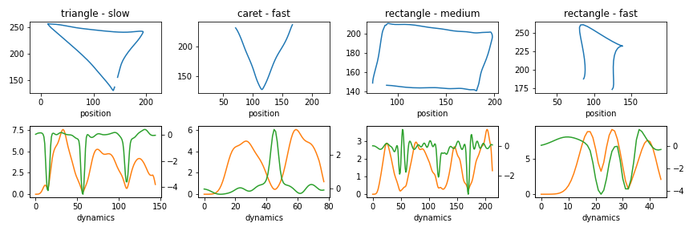
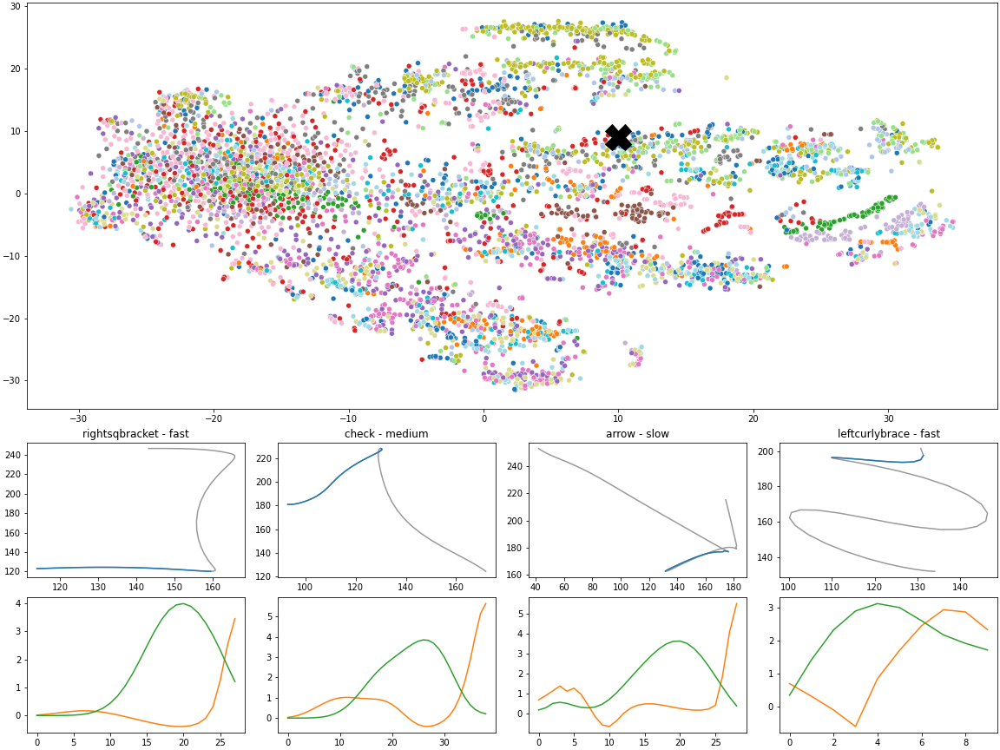

Elicitation of 2D expressive gestures through interactive sonification
Title
Author(s)
Antoine Loriette, STMS - Ircam CNRS Sorbonne Université, Paris, France
Diemo Schwarz, STMS - Ircam CNRS Sorbonne Université, Paris, France
PubPub Link
https://nime.pubpub.org/pub/8zdsd4ar/draft?access=ixgcj19y
Abstract
Gesture-based input devices for controlling music software should support expressivity. However, it is challenging to effectively design new gestural interactions that both exploit the capabilities of existing devices and afford user expressivity. To further the understanding of expressive interactions, we propose a demo that interactively supports users in the production of new gestural movements. Precisely, the demo implements an elicitation algorithm which rewards the originality of gesture dynamics to support users in the exploration of the space of motions they can perform.
This demo is targeting 2D interactions supported by, for example, a mouse, trackpad or Sensel device. As users interact with their input device, movement dynamics (e.g. speed profile and orientation derivative) are computed and 2D strokes are segmented into small primitives. The originality of a new segment is then measured as the minimum distance to previously observed segments and fed back to the users as an audio cue; the greater the distance, the louder the feedback. Such sonification scheme encourages users to produce new behaviours.
This elicitation produces a map of motion primitives wherein clusters identify prototypical user behaviour. The properties of these clusters, such as user specificity or time of invention, could be used to reflect on the user practice and identify new opportunities for interface design.
Requirements
The demo will provide a self-contained Max project for download that can be run by anyone with a Windows or Mac computer, after installing Max by Cycling’74. For running the provided patches it is not necessary to buy a Max license.
The demo will explore expressive touch and movement on 2D input devices. It will work with a mouse or touchpad, but we will also provide input modules for typical 2D input devices such as Sensel Morph, ROLI Lightpad Block, Wacom tablet, MIDI pads and joysticks, OSC streams.
Program Description
We observe that well-established gesture elicitation methods are usually targeting movement-to-action mappings (instead of expressivity) and that most recognition algorithms rely on geometrical features for discriminating users’ intention. In parallel, there is little information about how users interact with their input devices in the context of music software control.
After an introduction of the method and aims of this research, we will spend time to get the demo patch running for everyone, and connect the participants’ 2D controllers.
We will then let participants explore expressive 2D gestures first without, then with the help of the elicitation algorithm’s audio feedback. The built-in visualisation will help participants see how much they could extend their personal expressive space through “rewarding” original movements by audio feedback.
At the end of the demo, participants will have the choice to save and send us their recorded movement data in order to constitute an anonymised movement dataset that will allow more in-depth analysis of a larger panel of users, leading to better generalisation and helping further research on this topic.
Media
This demo heavily draws inspiration from the works of Williamson et al. [1] and Kulić et al. [2]. While the first reference investigated the sonification of user movements based on the distance with previously observed movements in order to foster original behaviours, the second reference formalised a process that learns the structure of human movement by iteratively clustering motion primitives.
We relied on the dataset Unistroke [3] to tune our algorithm. This dataset contains 2D strokes produced by 11 users and representing 16 different shapes executed at various speeds. The figure below shows 4 samples from 3 different classes (triangle, caret and rectangle) and 3 different speeds (slow, medium and fast). The first and second row represent position data and dynamics, respectively.


Position data and associated dynamics of four sample strokes taken from the dataset Unistroke.
In this demo, we propose to explore movement dynamics as the main feature for computing similarity between input sequences, with the hypothesis that these could be better suited as a proxy for movement expressivity. In addition, they provide interesting invariances to translation and orientation.
The elicitation process produces an embedding of motion primitives which can then be explored to identify specific patterns. In the figure below, the top row displays the Unistroke dataset embedded with t-sne, based on pairwise distances taking only movement dynamics into account. We observe different clusters with similar dynamics, produced by very different time series, such as the 4 samples drawn in the vicinity of the black cross for which the position data and dynamics can be compared (last two rows).


While the figure above has been produced with the Unistroke dataset, we expect to observe significant differences from a similar analysis based on the data gathered interactively during the demo. The influence of audio feedback would be in particular very useful to further inform sonified elicitation procedures. The specific case of music software control is well suited for this approach: it already relies on expressive gestures rather than conventional action-recognition interactions.
[1] Williamson, J., & Murray-Smith, R. (2012). Rewarding the original: explorations in joint user-sensor motion spaces. Proceedings of the 2012 ACM Annual Conference on Human Factors in Computing Systems - CHI ’12, 1717. https://doi.org/10.1145/2207676.2208301
[2] Kulić, D., Ott, C., Lee, D., Ishikawa, J., & Nakamura, Y. (2012). Incremental learning of full body motion primitives and their sequencing through human motion observation. International Journal of Robotics Research, 31(3), 330–345. https://doi.org/10.1177/0278364911426178
[3] https://depts.washington.edu/acelab/proj/dollar/index.html
Acknowledgements
This work is supported by ELEMENT project – Enabling Learnability in Embodied Movement Interaction, (ANR-18-CE33-0002).